Tether View - Warlock¶
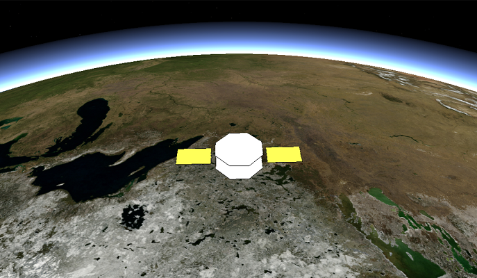 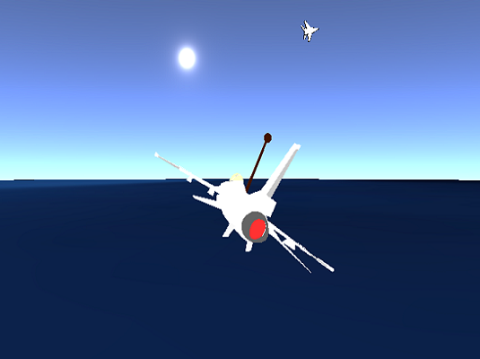The Tether View is responsible for displaying tether views. To open a tether view right click on a platform to open the platform context menu and select Tether. Alternatively a tether window may be opened by pressing the tether key-sequence (default: Ctrl-Shift-T) after selecting a platform. Multiple tether windows can be displayed and the same entity can be tethered to multiple times.
Right clicking on the tether view provides access to the vector context menu. From here, vectors to display body-coordinate, velocity, sun, moon, earth nadir, sensor boresights, and vectors to other platforms may be added. To add a vector to another platform, select “New Vector…” from the context menu. This will open a dialog where a platform or groups of platforms may be selected. The color of the vector(s) may be changed by clicking on “Choose Color” in the dialog.
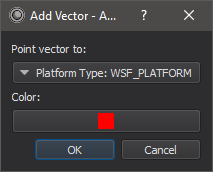Angles¶
As noted above, The Tether View vectors context menu allows end users to visualize vectors. The Angles context menu works with the vectors context menu to allow the end user to visualize the angle measurement between two vectors. To use the Angles menu, you first need to select at least two vectors in the context menu. The vectors can be any singular vector. This means that all vectors that are prepopulated except for “Frame body” will work, as well as any vector that points to exactly one platform (ie New Vector -> Point vector to -> platform -> selected). The other items in “New Vector…” menu will not work as they are not singular, they represent groupings of multiple vectors.
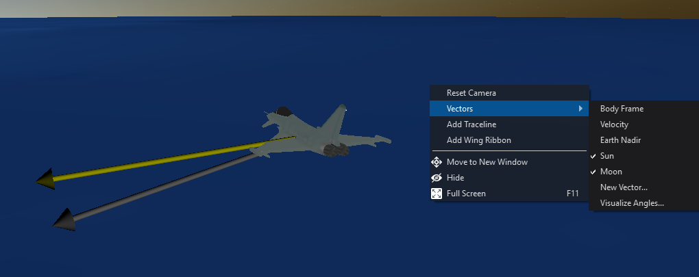 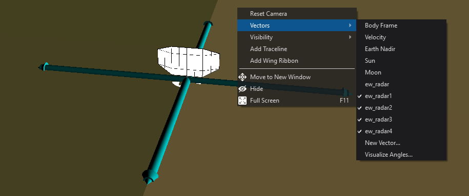{kind=link}
{kind=link}
When you are ready to visualize an angle between two vectors, make sure your vectors are visible in the view and click “Vectors -> Visualize Angles”.
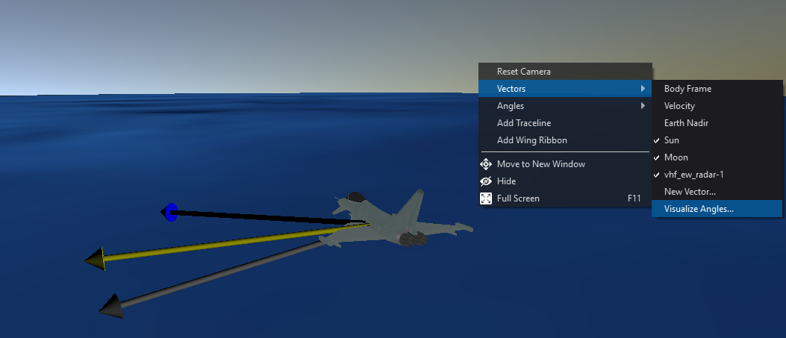This will bring up the visualize angles dialogue. Simply select the two vectors you are interested in seeing the angle between and select ok. Note that you can also assign a color for easier visualization, this color will also be shown in the overlay menu.
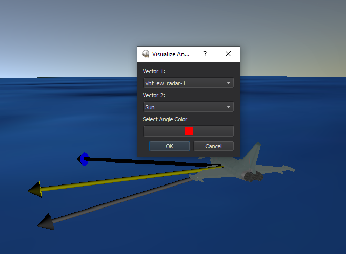In the image above vhf_ew_radar-1 platform (Show as the blue vector in the view) and the Sun (Shown as the yellow vector in the view) have been selected. Red was chosen for the angle color.
Once you click okay two things occur. One is that the angle between the chosen vectors immediatly becomes visible (shown in red), additionally a 2d overlay appears in the lower left corner of the tether view. The overlay has the angles name and its associated measure.
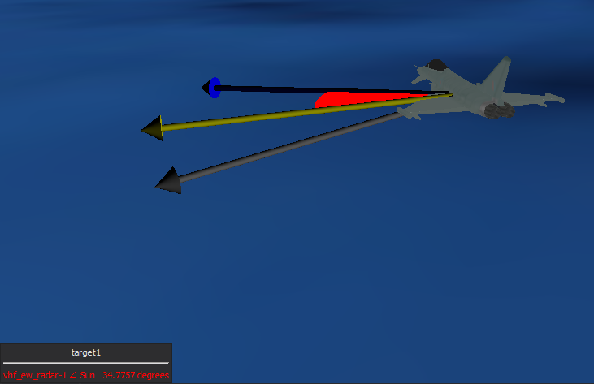Keep in mind that you can do this process as many times as youd like to visualize multiple angle measures at a time. Also keep in mind that when selecting an angle color in the menu, you can provide an alpha channel to make the angles transparent.
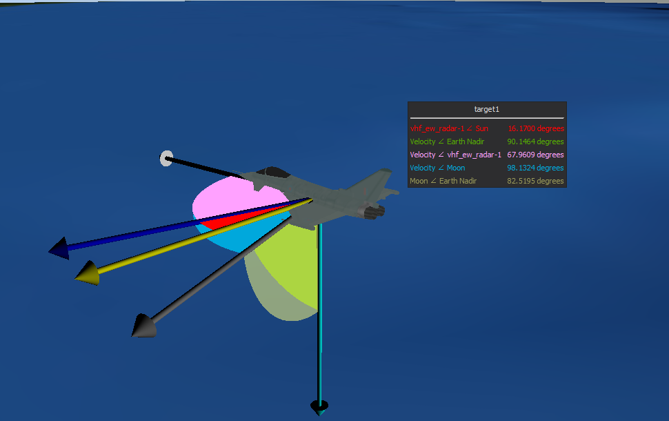These angles update in real-time and respect the units set in User-Preferences.
After you have the angles you wish to visualize selected, you may notice a new context menu appears at root level. .. image:: ../images/AnglesMenu.png
As you can see, the “Angles” context menu now includes the angles you have selected for viewing, complete with the associated name and selected color. This menu allows you to manage the angles visibility features.
Hover over an angle and youll see two options. Visible is self explanatory, if unchecked, the angle will dissapear from the view. If checked, it will appear in the view. Filled may need a little more explaining. When filled is unchecked the angle will be rendered as a “wireframe” for easier viewing if no alpha was selected in color. .. image:: ../images/AnglesWireframe.png
In addition to the angles in the view, you will now see an additional menu item, “Overlay”. .. image:: ../images/AnglesOverlayMenu.png
The Overlay is the 2d box mentioned before. It shows you the actual angle measure between the two vectors described by the entries name/color.
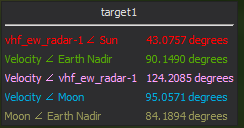This overlay is updating in realtime as the angle grows or shrinks. Its important to note that an angle menu entry wont update if the angle is NOT visible in the view. It will stay at the angle last calculated before an angle was made invisible. You can see that the overlay submenu only has two options. Visble - which does as it does for angles. Sync with view - This is the important one. This allows you to use the angle menu visibility properties to also control the overlay.
When you make an angle invisible by unchecking its visibility property, the overlay will not automatically update. You must use “Sync with view” to synchronize the two. This was done so that no redundant angle management system created for the overlay, but also allows you to leave angles not visible in, if you wish..
The Sync with view menu also brings back the overlay if the user closes it with the X button. Given this overlay is a common widget in afsim, you can also drag and drop other data properties into it for viewing. Unfortunately though, these data elements will not be retained upon synchronization.
Now get out there and get your Euclid on.
Look-at¶
By selecting a platform and then right clicking on another platform an option will be provided to Look at the second platform from the first platform.
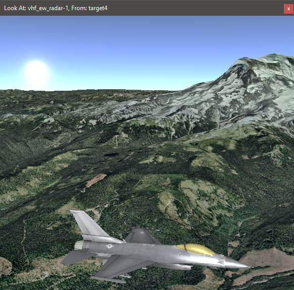Preferences¶
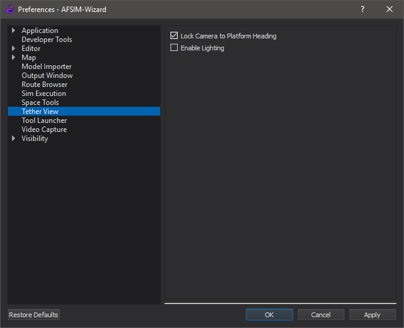Lock Camera to Platform Heading¶
Allows the user to fix the tether view camera to the tethered platform’s heading.
Enable Lighting¶
Enable the lighting of the terrain and models.
WsfDraw¶
If there are visible draw layers, right clicking on the tether view provides access to a WsfDraw menu that controls the visibility of the different draw layers that have been specified. By default, all draw layers will be turned off.
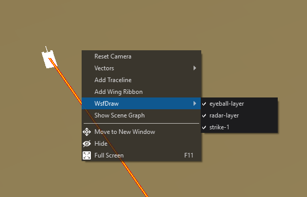Platform History¶
Right clicking on the tether view provides access to platform history options.
Add/Remove Traceline - Displays the platforms trace-line history.
Add/Remove Wing Ribbon - Displays the platform’s wing-ribbon history.